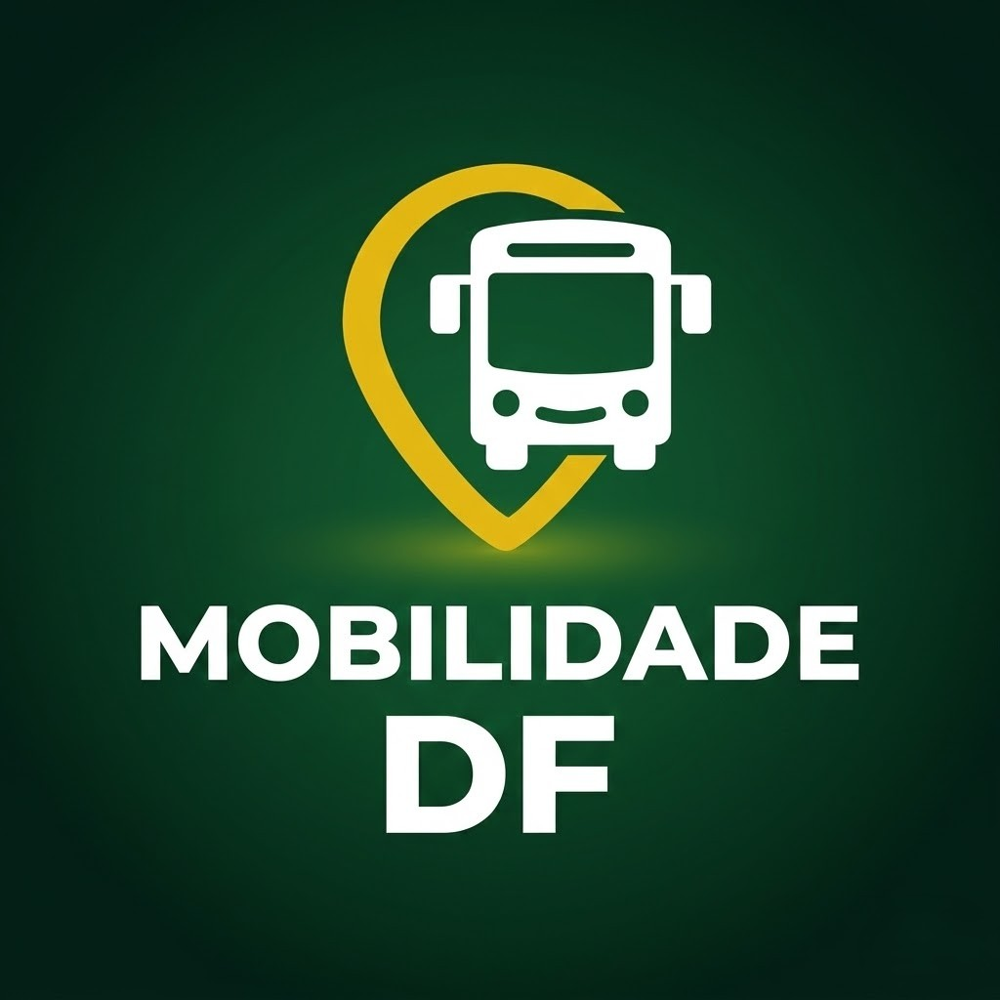

Linhas e Horários
Acesse informações de itinerários e horários de forma rápida para cada linha.

Monitoramento do transporte público do DF.
O Mobilidade DF é um projeto independente de transparência pública e sem fins lucrativos. Utilizando-se dados oficiais da SEMOB/DF e do DF no Ponto. Como as informações passam por processamento e tratamento em tempo real, recomenda-se consultar as fontes nas plataformas oficiais.
Acesse informações de itinerários e horários de forma rápida para cada linha.
Visualização dos pontos de parada do Distrito Federal com previsão de chegada dos veículos.
Monitoramento de uma ou mais linhas em tempo real.
Painel com filtros de linhas, prefixos e empresas detalhadas.
Informações técnicas sobre a composição da frota ativa das empresas operadoras de transporte.
Outros